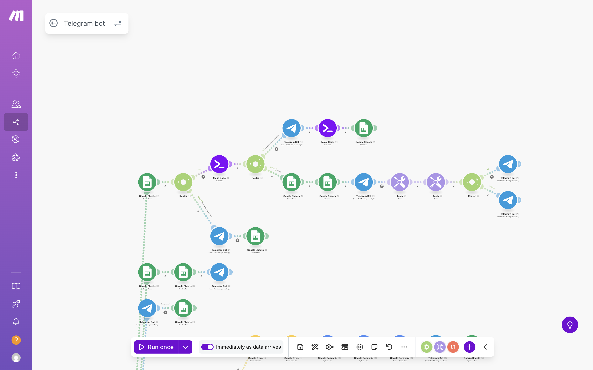

This Make.com-powered bot connects clients, an AI assistant, and managers in one workflow, syncing every interaction with Google Sheets for seamless follow-up.
Project Overview
The solution uses Make.com scenarios to orchestrate conversations between end users, an AI assistant, and the manager team. Google Sheets acts as the single source of truth for catalog content, pricing, FAQs, and logging every action that users take inside the bot.
High-level view of the onboarding experience that captures user data and routes them to the right command set.Scenario branches in Make.com that synchronize responses with Google Sheets and trigger manager escalations.
Command Walkthrough
/start
Initializes the bot and displays the main navigation menu.
Creates or updates the user record in Google Sheets with name, chat ID, and start time.
Sends a short onboarding message that explains how to use the assistant.

Original and refreshed welcome sequences that register the user and guide them through the main menu.
/catalog
Shows product and service categories with interactive buttons.
Pulls relevant items and assets from Google Sheets or linked files.
Offers quick redirection to forms or landing pages for deeper exploration.
Dynamic catalog interface populated by Google Sheets data.
/price
Step 1: prompts the user to choose between compressors or drilling machines.
Compressor flow: select electric or diesel → capture pressure and flow requirements.
Drilling flow: request the bore diameter before preparing recommendations.
Writes every answer into Google Sheets (Sheet 2) for later personalization.
Returns the AI assistant’s best match from the catalog with a “Contact a manager” button.
Side-by-side pricing flows showing the legacy price sheet and the new guided assistant with data capture.
/faq
Displays interactive sections powered by callback buttons for deeper dives.
Renders answers in a clean, quoted format to improve readability.
Dynamically generates button labels and responses; a Make scenario manages state and content.
FAQ experiences transitioning from the original quick replies to the new callback-driven explorer.
/contacts
Delivers message templates that keep social links and contacts one tap away.
Ensures every outreach path is consistent across channels and device types.
/assistant
Draws from curated CSV tables extracted from the catalog to propose relevant products.
Shares confident recommendations in-chat, enriched with the best-fit catalog entries.
Escalates in the active thread whenever data is missing or confidence drops.
AI assistant responses shown in both the original interface and the updated preview-focused design.
/manager
Creates a dedicated thread for each client inside the managers’ group.
Detects existing threads and routes new requests there—no duplicates.
Sends selective notifications so the client knows when a manager joins without spamming.
/help
Summarizes the purpose of each command in a concise guide.
Provides a link to support or feedback forms for further assistance.
/about
Presents a short description of the company’s mission and services.
Gives users context about the brand they are interacting with.
Ticketing & Threads
Personal threads keep every client conversation tied to their dedicated manager space.
Auto-routing reuses existing threads when they exist; new ones spin up only when needed.
Two-way flow lets managers reply from the thread without losing context.
Make.com Automation Architecture
Webhooks drive both commands and callbacks, while routers and filters steer state.
Google Sheets writes include structured fields, deduplication, and live status updates.
Centralized message templates keep social links embedded in every outbound message.
AI assistant integration surfaces catalog models using the parameters gathered in /price.
Resolved Gemini file-delivery issues ensure Make scenarios stay stable end to end.
Data & Analytics
Stored: command or scenario name, /price parameters, client questions, timestamp, chat and user IDs, escalation status, ticket ID or URL, and the active thread reference.
All records are normalized for reporting and to power personalized follow-ups.
Reliability & Safeguards
Rate limits and selective notifications prevent alert storms.
Input validation normalizes formats such as phone numbers and symbols.
Fallback logic hands the conversation to a manager if the assistant lacks confidence.
Additional Features
Support for callback buttons and conditional logic across Make.com scenarios.
Comprehensive interaction logging inside Google Sheets for analytics.
Dynamic messages enhanced with user geolocation data.
Battery-level detection module that sends personalized alerts and upsell prompts.
Anti-spam logic prevents multiple commands from running in parallel for the same user.
Manager tickets post compact cards with client data and request summaries into the thread.
Battery alerts thank users above 50% charge and nudge booth visits when power dips below.
Helper scripts normalize text and special characters so every ticket reads consistently.